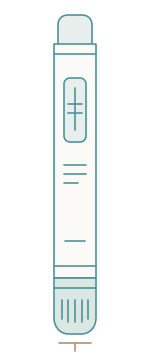

福岡院（天神）
FUKUOKA福岡空港駅地下鉄 約11分天神駅
〒810-0001 福岡県福岡市中央区天神3丁目4-2 髙橋天神ビル4階- 最寄り
- 地下鉄空港線 天神駅 徒歩4分・西鉄福岡（天神）駅 徒歩6分
- 診療
- 10:00〜19:00（受付18:30まで）・土日祝も診療
韓国からご旅行中の方へ
LIGHT CLINIC 福岡院（天神）・

自由診療です。マンジャロは日本では2型糖尿病の治療薬として承認されており、体重管理を目的とした使用は適応外です。詳しくは下の「適応外使用に関する表示」をご覧ください。
02INFORMATION
韓国の食品医薬品安全処と関税庁の発表により、海外で正規に処方された自己治療用の医薬品を、ご本人が手荷物で持ち込めるようになりました（原則6本まで。用法上3か月分以内であれば6本を超えても可、と報じられています）。
当院で処方する量は、医師が診察のうえで判断します。持ち込みの可否は韓国の税関が最終的に判断します。最新の基準は韓国の関税庁・食品医薬品安全処の案内をご確認ください。
03ABOUT
ほかの費用の有無は確認中
04PRICE
4本（4週間分）の料金です。
| 用量 | 料金（税込） | ウォンの目安 |
|---|---|---|
| 2.5mg | 14,000円 | 約117,000ウォン |
| 5mg | 21,000円 | 約175,000ウォン |
| 7.5mg | 29,000円 | 約242,000ウォン |
| 10mg | 37,000円 | 約309,000ウォン |
| 12.5mg | 44,000円 | 約367,000ウォン |
| 15mg | 52,000円 | 約434,000ウォン |
表参道院の料金です。福岡院の料金は確認中です。ウォンは1円＝約8.34ウォン（2026年11月16日）で計算した目安で、お支払いは日本円です。初めての方は2.5mgから始めます。用量は医師が判断します。
支払い方法：確認中
05FLOW
韓国語の問診票は準備中
所要時間の目安は確認中です
06ACCESS
07TRAVEL GUIDE
冷蔵（2〜8℃）で保管します。凍らせないでください。凍ったものは使えません。
保冷バッグに入れ、外箱のまま持ち運びます。室温（30℃以下）で保管する場合は21日以内に使ってください。
ご本人が手荷物でお持ちください。預け入れ荷物は凍結のおそれがあります。保安検査の扱いは航空会社にご確認ください。
韓国への郵送・配送による持ち込みは認められていません。
持ち込みの可否は韓国の税関が判断します。当院が通関を保証するものではありません。
続けて使う場合は、韓国の医師にご相談ください。体調に変化があったときは、使用をやめて医療機関を受診してください。
処方内容の証明書（英文）の発行は確認中
08ABOUT MOUNJARO
マンジャロ（一般名 チルゼパチド）は、週に1回、ご自身で皮下に注射するお薬です。日本では2型糖尿病の治療薬として承認されています。
週1回、同じ曜日に注射します。2.5mgから始め、4週間後に5mgへ。その後は4週間以上あけて2.5mgずつ増やすことがあります（最大15mg）。用量は医師の指示に従ってください。
09SIDE EFFECTS & PRECAUTIONS
添付文書は2型糖尿病の方を対象にしたものです。体重管理を目的に使う場合の安全性と有効性は、日本では確認されていません。
10MEDICAL DISCLOSURE
11FAQ
ご予約をお願いしています。
韓国語でのご案内方法は確認中です。 確認中
診察のうえ処方となった場合、当日に院内でお渡しします。在庫の状況により、お渡しできない用量がある場合があります。
医師が診察のうえで判断します。初めての方は2.5mgから始めます。
パスポート、現在使っているお薬が分かるもの、保冷バッグをお持ちください。
確認中です。 確認中
確認中です。 確認中
12RESERVATION
予約の窓口（LINEなど）は確認中です 確認中